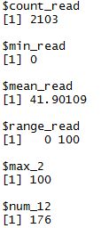
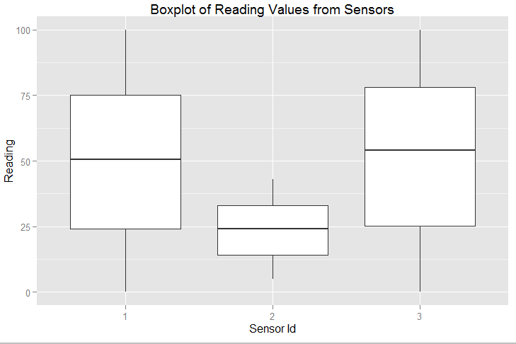
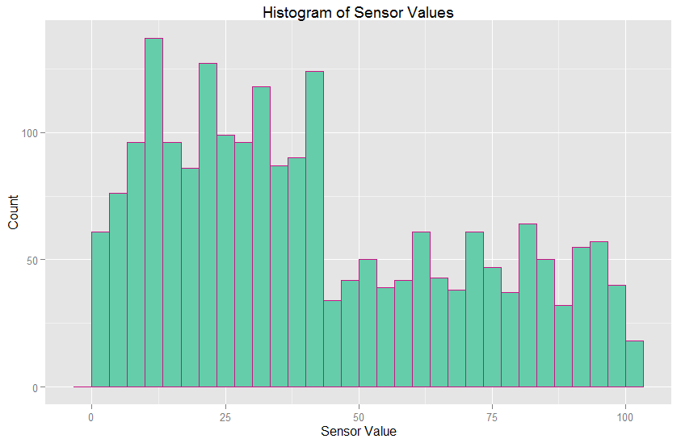
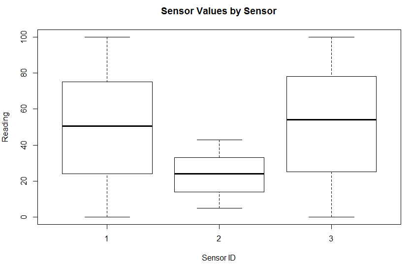
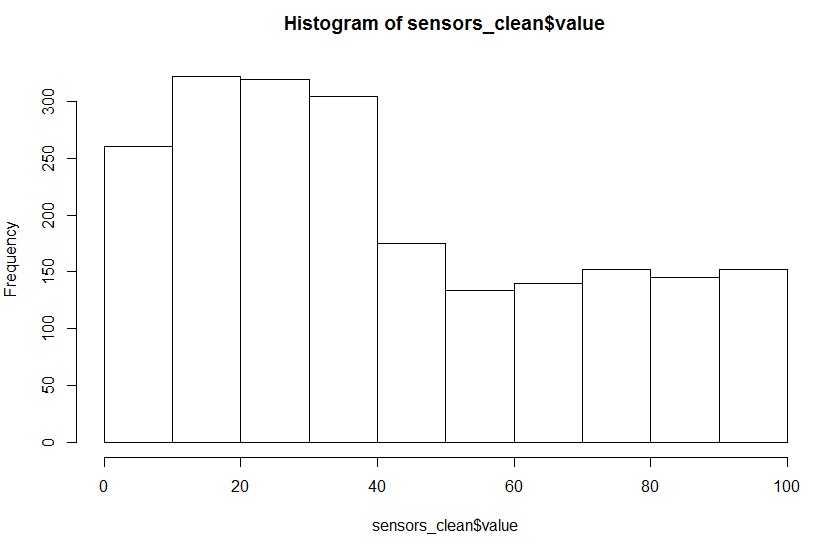
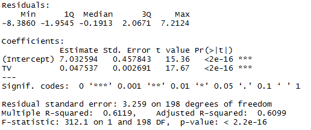
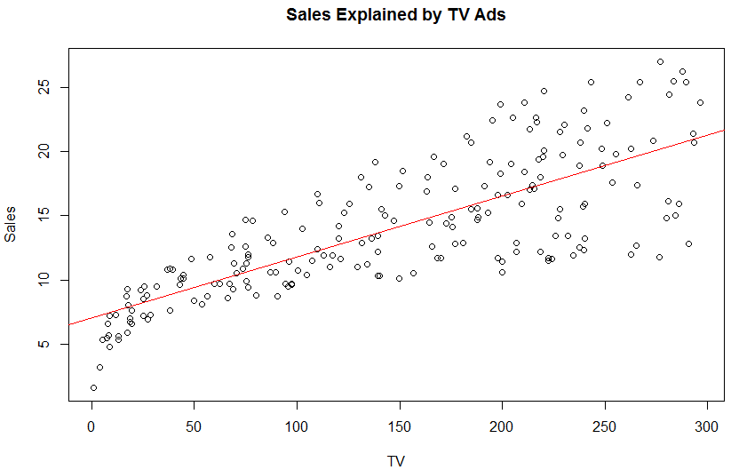
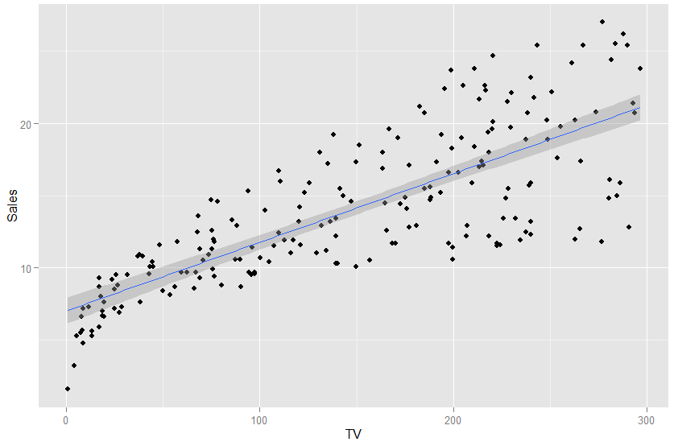

DATA 301 - Introduction to Data Analytics
Lab 8: Introduction to R
This lab uses R for data analysis. This lab can be done in pairs with no restrictions on who is in a pair. You can do it solo if you wish. Pairs are not required. If working in a pair, only submit from one person with both names on the files.
Objectives
- Loading, cleaning, summarizing, and visualizing data with R.
- Performing one sample and two sample t-tests on data.
Question #1 - Reading and Summarizing Data (5 marks)
Write a R program to:
- Read in the sensor data provided in lab 1. Download sensor.csv data. Display the first 20 rows using
head(). (0.5 marks)
- Create a dataset called
sensors_clean that only contains those observations where the value is between 0 and 100 inclusive. (0.5 mark)
- Create a list called
data_summary that contains the following: (3 marks)
- count of valid readings (value within bounds described earlier)
- minimum reading
- mean reading
- range of readings
- maximum reading of any sensor at site 2
- total number of observations of site 1 sensor 2 (HINT:
length() might come in handy)
- Create a histogram of all values. (1 mark)
- Create a boxplot that compares the three different sensors. (1 mark)
- Note: You may use ggplot as described in the notes or the built-in functions hist() and boxplot().
- Note: Will need to use
as.factor(sensorid) for boxplot.
Sample Output

ggplot Output


Built-in Plotting Output


Question #2 - Hypothesis Testing (5 marks)
Perform the following analysis: Test the hypothesis that the mean value of all sensors is less than 45.
- In a comment, write out the Null and Alternate Hypotheses. (1 mark)
- Perform an appropriate t-test using
t.test(). (2 marks)
- In a comment, state whether you reject or fail to reject the null hypothesis and a sentence stating what this means. (1 mark) (e.g. Fail to reject null hypothesis. There is insufficient evidence to conclude that the mean value of all sensors is not less than 45.)
Question #3 - Hypothesis Testing (5 marks)
Test the hypothesis that there is a difference in values between site 1 and 2.
- Create a dataframe called new_data that holds only data from sites 1 and 2. (1 marks)
- In a comment, write out your Null and Alternate Hypotheses. (1 mark)
- Perform an appropriate t-test. (2 marks)
- In a comment, state whether you reject or fail to reject the null hypothesis and a sentence stating what this means. (1 mark)
Question #4 - Hypothesis Testing (5 marks)
Download the dataset advertising.csv. This dataset includes sales data, as well as the budget for TV, Radio and Newspaper advertising. We are interested in predicting sales given a certain budget.
- Read in the dataset into a dataframe called
advertising. (0.5 mark)
- Display the last 15 elements of the dataframe. (0.5 mark)
- Create three graphs, showing the relationship of Sales with the other 3 variables. Use plot(). Example: plot(Radio, Sales) (1.5 marks)
- Create a linear model using TV to explain Sales. (2 marks)
- Print out the summary table of the linear model. (0.5 marks)
- Plot the linear model onto the graph of Sales and TV. Make the colour of the line red. (1 mark) Sample of geom_point for graph
Sample Output

Graph using plot()

Graph using ggplot()

Submission
Submit your code using Connect. You may submit all code as a single R file or create separate files for each of the questions.
 Home
Home